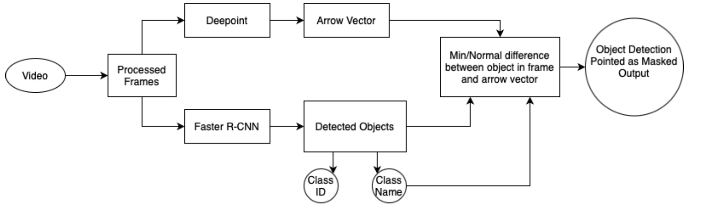
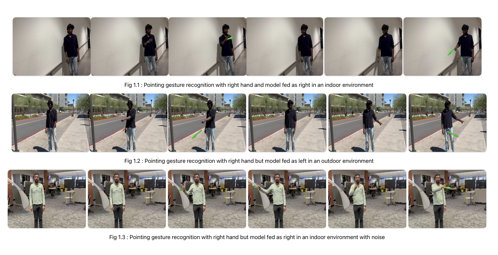
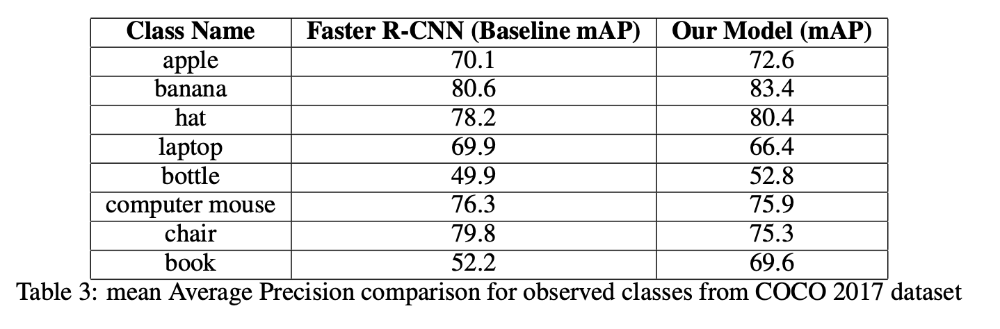
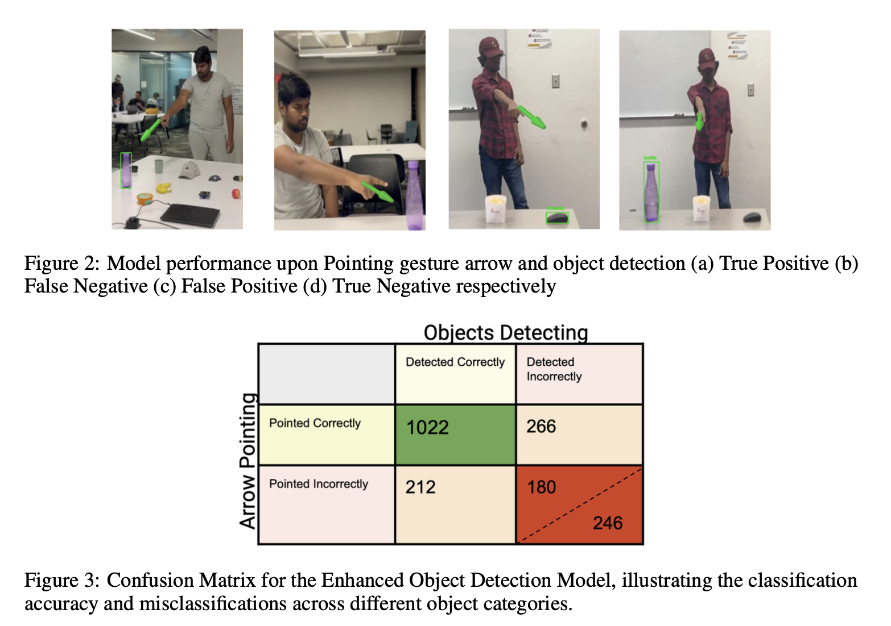

Object detection is a critical component of computer vision. Traditional methods, however, suffer from inefficiencies as they scan entire images to locate objects, often processing vast irrelevant regions. This not only consumes excessive computational resources but also hampers real-time applications where fast, efficient decision-making is paramount.  To overcome these limitations, our project proposes an approach by integrating human pointing gestures into the detection system. This method focuses the system’s attention on specific areas indicated by a human operator, significantly improving both the speed and accuracy of object detection. By honing in on relevant parts of the image, our approach interprets the semantic context of scenes, which is crucial for decision-making on resource-limited edge devices like drones.

Our enhanced model now delivers enriched visual feedback. It draws bounding boxes around detected objects and annotates these with the object’s class name and confidence levels. The visualization includes additional elements like arrows or highlights that emphasize specific features or aspects of the detected objects, significantly enhancing the utility for end-users.
This project has effectively demonstrated how the integration of human pointing gestures with traditional object detection systems can significantly enhance the efficiency and accuracy of these systems. Our innovative approach not only optimizes computational resources by focusing on user- indicated areas but also enriches the system’s contextual awareness, thereby facilitating more relevant and precise detections. This integration represents a significant advancement in the field of computer vision, suggesting substantial potential for further developments in interactive systems where human input can directly influence and improve machine perception and decision-making. The successful outcomes from this project lay a strong foundation for future research into creating more adaptive, intuitive, and user-focused detection systems.
 The confusion matrix and subsequent calculations revealed that the system maintained a robust mean Average Precision (mAP) of 76%. This metric is particularly telling as mAP is a comprehensive measure that considers both precision and recall, providing a balanced view of the model’s overall performance across various classes.